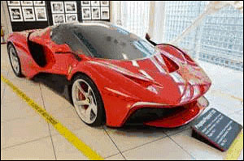
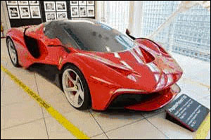

Atrakcje
Muzeum Ferrari
W odległości 40 km od miejsca zakwaterowania w miejscowości Maranello znajduje się siedziba najbardziej znanej marki samochodowej na świecie... tak, tak to :-)
 

W siedzibie Ferrari mieści się niesamowite muzeum i tor wyścigowy na którym są testowane prototypy nowych modeli. Oczywiście jest możliwość zwiedzenia muzeum jak również wypożyczenie i przejażdżka legendarnym Ferrari F50!


Fabryka Parmezanu
10 km od miejsca zakwaterowania znajduje się fabryka najbardziej znanego na świecie sera - Parmigiano Reggiano


Przy grupach minimum 20 os. możliwość zwiedzania połączonego z degustacją sera oraz zakupem po promocyjnych cenach.
Ruzzola
Przed zwiedzaniem fabryki jest również możliwość zorganizowania wspólnej lokalnej gry w Ruzzolę z tamtejszymi mieszkańcami. Oczywiście przed grą wskazana jest degustacja lokalnej Grappy i wina :-)

Wieczorów tematycznych koncertów
Na miejscu w barze pensjonatu Trogolino jest możliwość
zorganizowania wieczorów tematycznych, koncertów, karaoke. Od kilku lat grupy narciarzy z Polski
organizują "Wieczór Polski" na którym serwowane są typowo polskie potrawy (wcześniej
przygotowane przez samych uczestników). Oczywiście na wieczór ten obowiązuje strój
biało-czerwony, nawet miejscowy zespół muzyczny przebiera się w koszulki Reprezentacji Polski i
próbuje grać i śpiewać utwory polskie, szczególnie piosenki legendarnej grupy Dżem :-)
Z
chęcią
przychodzą też tamtejsi mieszkańcy, nawet sam Burmistrz Montecreto, który wręcza miłe upominki.


Piłka nożna
200 m od pensjonatu w miejscowym parku jest możliwość zorganizowania meczu piłki nożnej, w zadaszonym obiekcie na świeżym powietrzu.Dla kibiców właściciel pensjonatu serwuje przepysznego grzańca z wina :-)

Podczas pobytu, jest również możliwość degustacji i kupna wina z jednego z najsłynniejszych regionów produkcji wina - Toscanii. Ceny jak najbardziej preferencyjne! :-)